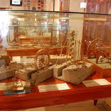
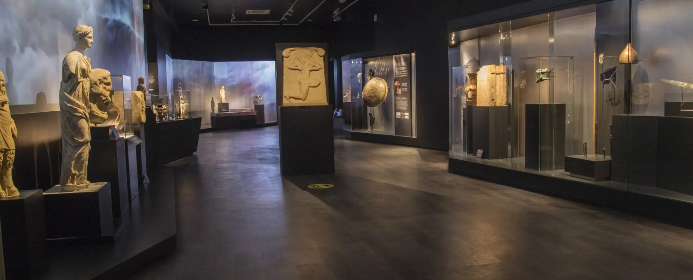

The aim of the museum is to highlight this relatively unknown aspect of ancient Greek civilization and to prove
that the technology of the ancient Greeks, just before the end of the ancient Greek world, was shockingly similar
to the beginning of our modern technology. The bolts and nuts, gears and rules, pulleys and belts...

The aim of the museum is to highlight this relatively unknown aspect of ancient Greek civilization and to prove that
the technology of the ancient Greeks, just before the end of the ancient Greek world, was shockingly similar to the
beginning of our modern technology. The bolts and nuts, gears and rules, pulleys and belts, sprockets and chains,
block and tackles and winches, hydraulic controllers and valves are just some of the inventions of the ancient Greeks
which were the foundations of their complex technology.
The exhibits are accompanied by rich audio-visual material (in Greek and English), such as explanatory labels and
giant posters with a lot of information, detailed diagrams, photos and complete bibliographical references, while
many of the exhibits are interactive. There are projecting stations with video and animation as well as
documentaries in which the exhibitor explains the function and the use of the mechanisms.